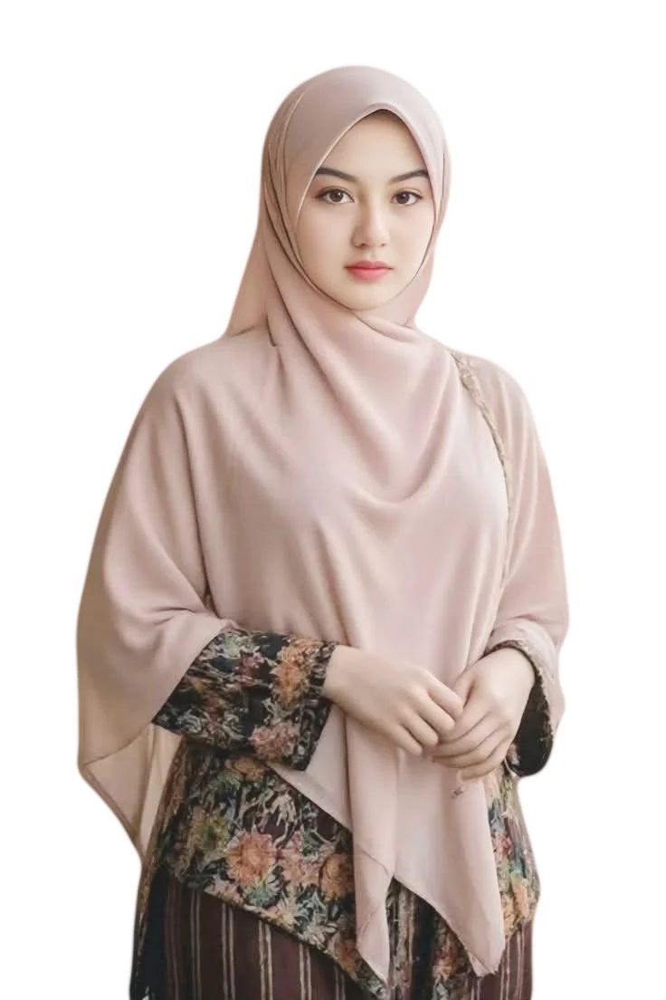
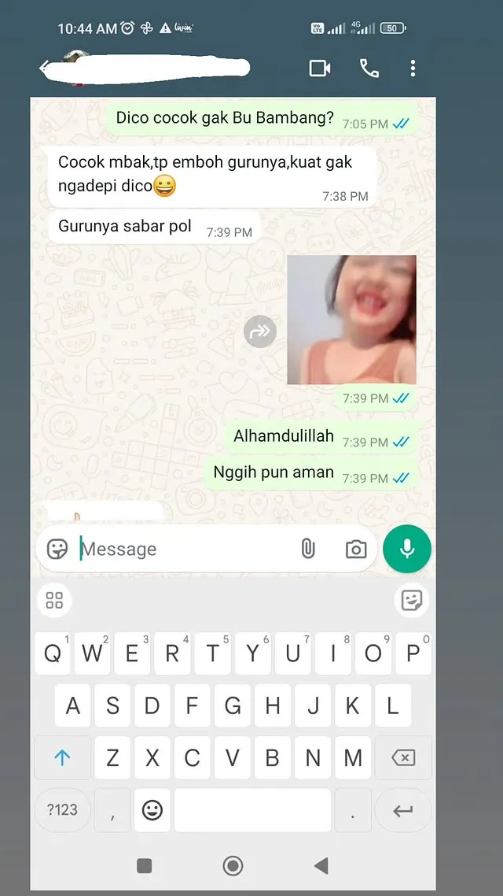
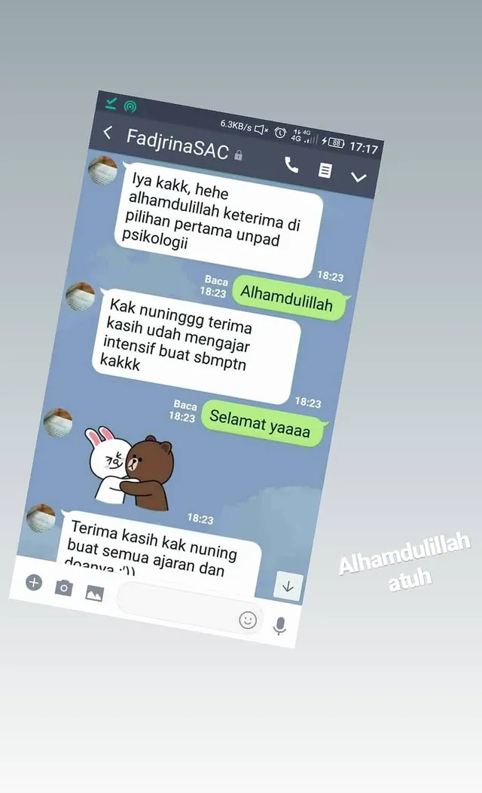
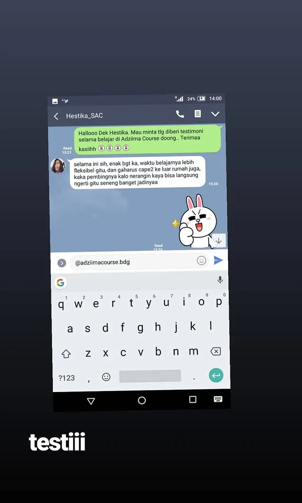
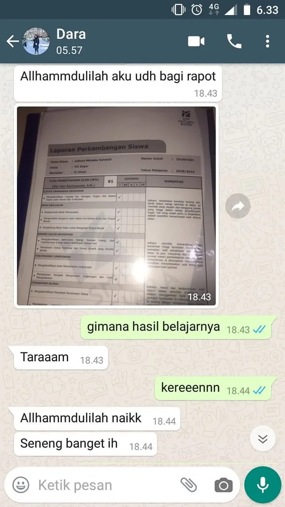
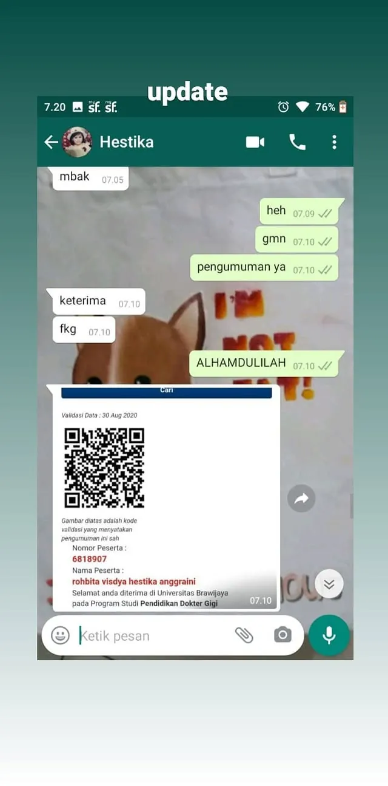
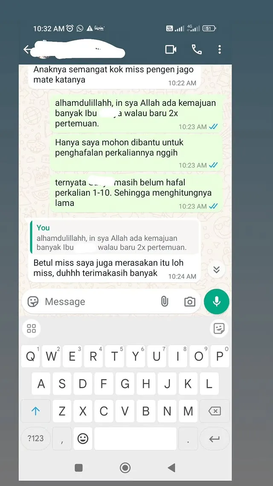

Materi terus bertambah
Namun anak belum tahu topik mana yang paling menahan skornya.
PTN Small Class 2027 • Malang • Surabaya • Bandung
UNTUK SISWA KELAS 11, 12 & GAP YEAR
Bukan selalu karena anak kurang rajin. Sering kali ia belum tahu kelemahan mana yang harus diperbaiki lebih dulu, latihan apa yang paling dibutuhkan, dan apakah skornya benar-benar bergerak.

KALAU INI TERASA FAMILIAR
Situasinya bisa berbeda, tetapi polanya sering mirip.
Namun anak belum tahu topik mana yang paling menahan skornya.
Nilai naik-turun, tetapi kesalahan yang sama tetap berulang.
Anak hadir, mencatat, lalu tetap ragu ketika harus mengerjakan sendiri.
Yang terdengar hanya “aman”, tanpa gambaran apa yang sudah berubah.
Yang melelahkan bukan hanya banyaknya materi.
Yang melelahkan adalah belajar tanpa tahu apakah arahnya sudah benar.KONDISI YANG SEBENARNYA DICARI
Bayangkan jika setiap minggu anak tahu apa yang harus dikerjakan—dan orang tua tahu kenapa hal itu menjadi prioritas.
Tahu fokus minggu ini tanpa membuka semua materi sekaligus.
Berani bertanya karena tidak tenggelam di kelas besar.
Memahami pola kesalahan, bukan hanya melihat angka tryout.
Melihat progres yang nyata melalui evaluasi dan laporan rutin.

PERSPEKTIF BARU
Dua siswa bisa memiliki target yang sama, tetapi kelemahan, kebiasaan, dan titik awalnya berbeda. Karena itu, memberikan latihan yang sama kepada semua siswa tidak selalu menghasilkan progres yang sama.
Setiap sesi perlu menjawab: apa yang sedang diperbaiki, kenapa ini penting, dan apa langkah berikutnya?
DI SINILAH SMALL CLASS MASUK
Small Class menggabungkan kedekatan kelas kecil dengan sistem belajar yang terukur. Anak tetap belajar bersama teman, tetapi fokus perbaikannya tidak harus sama.
Mulai dari assessment. Tidak perlu memutuskan program sebelum memahami posisi awal anak.

BUKAN KUMPULAN FITUR
Setiap tahap menghasilkan informasi untuk menentukan tahap berikutnya.
PETAKAN
Memahami posisi awal, target, kebiasaan, dan subtes yang perlu diprioritaskan.
LATIH
Belajar konsep dalam kelas kecil, lalu memperkuat kelemahan melalui latihan personal.
KOREKSI
Membahas kesalahan utama dan memperbarui fokus belajar untuk minggu berikutnya.
BUKTIKAN
Melihat pergerakan skor dan menerjemahkan proses menjadi laporan yang dapat dipahami.
APA YANG DIDAPATKAN
Nilai Small Class bukan hanya pada tiga sesi mingguan, tetapi pada keputusan belajar yang terus diperbarui.
APAKAH INI COCOK?

DIBANGUN DARI PENGALAMAN MENGAJAR
Pengalaman akademik, kepemimpinan komunitas, dan interaksi langsung dengan siswa menjadi fondasi pendekatan yang personal dan bertanggung jawab.
DARI PERJALANAN MENGAJAR
Dokumentasi berikut menunjukkan pengalaman pendampingan yang benar-benar tersedia.
“Gurunya sabar pol.”
“Waktu belajarnya lebih fleksibel dan kalau menerangkan bisa langsung mengerti.”
“Terima kasih sudah mengajar intensif. Alhamdulillah diterima di pilihan pertama.”

Pendampingan yang sabar
Pilihan pertama Psikologi Unpad
Fleksibel dan mudah dipahami
Hasil belajar meningkat
Diterima Kedokteran Gigi UB
Kemajuan mulai terlihatSebagian dokumentasi berasal dari perjalanan mengajar sebelum Inersia Education berdiri. Hasil setiap siswa berbeda dan tidak menjadi jaminan kelulusan.
Assessment membantu melihat kebutuhan anak sebelum Anda mempertimbangkan program.
KENAPA BUKAN BELAJAR SENDIRI SAJA?
Anak dapat belajar kapan saja, namun harus menentukan sendiri prioritas, membaca kesalahan, dan menjaga konsistensi.
Materi bergerak bersama. Siswa yang tertinggal atau sudah lebih maju bisa mendapatkan pengalaman yang kurang sesuai.
Kelas maksimal lima siswa dipadukan dengan drill individual, evaluasi mingguan, dan tracking progres.
INVESTASI PROGRAM
Harga ditampilkan terbuka agar keluarga dapat mempertimbangkan program dengan tenang.
Total investasi program
Rp22.500.000
Deposit Rp6.000.000 menjadi bagian dari total biaya, bukan biaya tambahan.
Hubungi tim Inersia untuk memastikan ketentuan Early Admission yang sedang berlaku.
Anda dapat memahami kebutuhan anak terlebih dahulu sebelum melanjutkan ke pembayaran.
Maksimal 20 siswa atau 4 kelas per kota. Kursi baru terkunci setelah deposit diterima.
PROGRAM OFFLINE DI 3 KOTA
SEBELUM MENGAMBIL KEPUTUSAN
Program yang tepat seharusnya dipilih setelah Anda memahami ritme, komitmen, dan batasannya.
Tidak selalu. Program lebih cocok untuk siswa kelas 11, kelas 12, atau gap year yang membutuhkan arah belajar jelas, pemantauan rutin, dan lingkungan kelas kecil. Assessment membantu menilai kecocokannya.
Ritme acuan mencakup tiga sesi offline per minggu dan latihan personal singkat. Jadwal aktual perlu dibahas berdasarkan kota dan ketersediaan kelas.
Nilai program berasal dari sistem lengkap: assessment, roadmap, kelas kecil, drill personal, evaluasi mingguan, tryout, tracking, laporan orang tua, dan pendampingan sampai ujian. Assessment memberi konteks sebelum keluarga memutuskan.
Small Class mempertahankan ritme belajar bersama, tetapi keputusan latihan dan fokus perbaikannya lebih personal. Tutor juga memiliki ruang lebih besar untuk melihat proses setiap siswa.
Tidak. Hasil dipengaruhi kemampuan awal, konsistensi, strategi pilihan, dan proses seleksi. Inersia membantu membuat proses belajar lebih terarah, disiplin, dan terpantau.
Hubungi tim Inersia untuk memastikan ketentuan assessment yang sedang berlaku. Kursi dianggap terkunci setelah deposit Rp6.000.000 diterima; deposit merupakan bagian dari pembayaran tahap pertama.
LANGKAH BERIKUTNYA
Isi data singkat berikut. Tim Inersia akan membantu menjadwalkan assessment dan memahami kebutuhan awal siswa.
Assessment Kesiapan PTN
± 2 menit untuk mengisiData digunakan untuk konsultasi program dan tindak lanjut assessment Inersia. Pengiriman baru dilakukan setelah Anda menekan kirim di WhatsApp.
SATU LANGKAH YANG MASUK AKAL
Assessment membantu Anda melihat posisi awal, kebutuhan, dan kecocokan format Small Class dengan lebih jernih.
Cek Kecocokan & Jadwalkan AssessmentTanpa janji kelulusan. Tanpa keputusan terburu-buru.